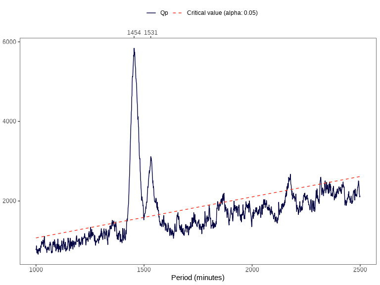
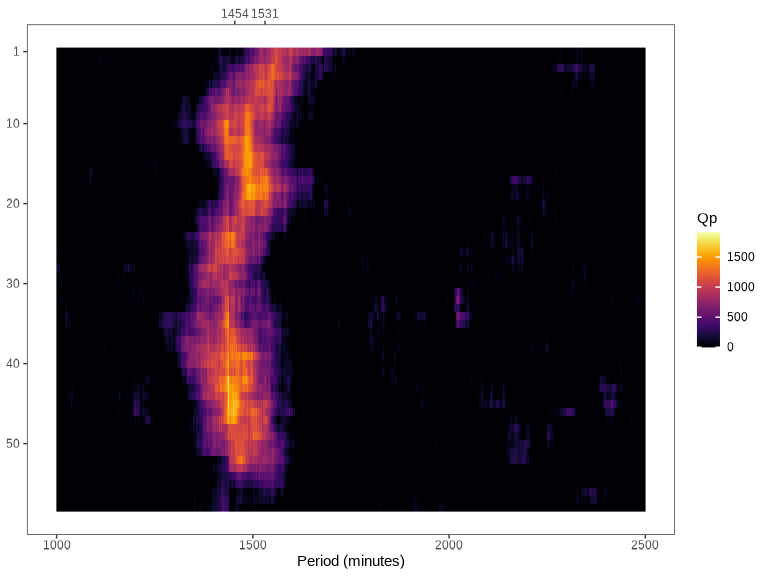
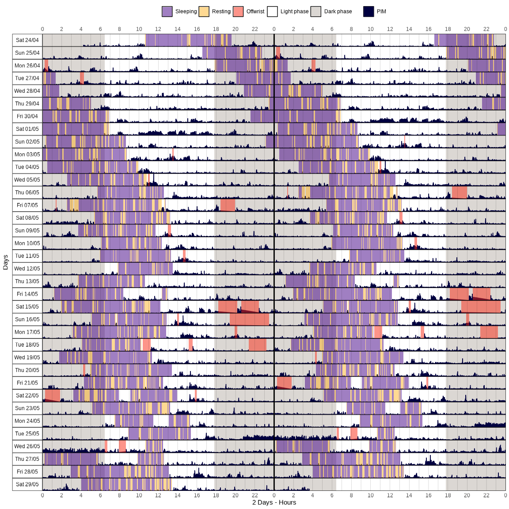
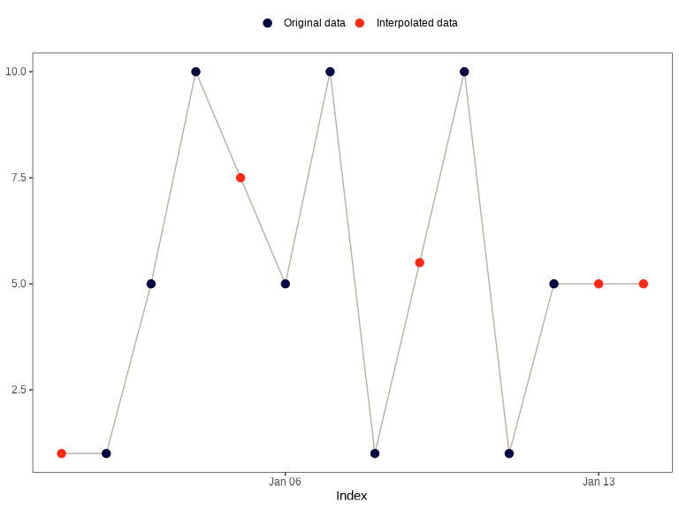

Overview
actverse is an R package that offers a comprehensive toolkit for processing, analyzing, and visualizing actigraphy data. It is designed to support sleep and chronobiology researchers by streamlining workflows and enhancing reproducibility in actigraphy research.
The package is built on tidyverse principles and integrates seamlessly with the tidyverse ecosystem, ensuring a consistent and user-friendly experience for data manipulation and analysis.
If you find this project useful, please consider giving it a star!

Installation
You can install actverse using the remotes package:
remotes::install_github("danielvartan/actverse")Usage
The R ecosystem offers a wide variety of time series standards, and selecting the right one was an important decision in developing actverse. A consistent standard for time objects is essential, as time can be represented in many ways and may be based on different numerical systems. For packages that follow tidyverse principles, we believe the tsibble package provides the best time series standard. As its name suggests, tsibble extends the tidyverse tibble object for time series data.
Most actverse functions require your data to be in the tsibble format. Converting your data is straightforward and can significantly improve your experience working with time series in R. Please refer to the tsibble documentation for guidance on adapting your data.
Read/Write
-
read_acttrust(): Read, tidy, and validate an ActTrust file. -
write_acttrust(): Write atsibbleto a readable ActTrust file.
Example:
file <- get_from_zenodo(
doi = "10.5281/zenodo.4898822",
dir = tempdir(),
file = "processed.txt"
)
data <- file |> read_acttrust(tz = "America/Sao_Paulo")
library(dplyr)
data |> glimpse()
#> Rows: 51,806
#> Columns: 17
#> $ timestamp <dttm> 2021-04-24 04:14:00, 2021-04-24 04:15:00, 202…
#> $ pim <dbl> 7815, 2661, 3402, 4580, 2624, 3929, 5812, 3182…
#> $ tat <dbl> 608, 160, 243, 317, 255, 246, 369, 270, 373, 1…
#> $ zcm <dbl> 228, 64, 80, 125, 33, 105, 171, 54, 189, 64, 6…
#> $ orientation <dbl> 0, 0, 0, 0, 0, 0, 0, 0, 0, 0, 0, 0, 0, 0, 0, 0…
#> $ wrist_temperature <dbl> 26.87, 27.18, 27.68, 27.86, 28.04, 28.13, 28.2…
#> $ external_temperature <dbl> 24.62, 25.06, 25.50, 25.75, 25.94, 26.06, 26.3…
#> $ light <dbl> 3.58, 5.23, 3.93, 4.14, 3.16, 3.63, 11.53, 2.4…
#> $ ambient_light <dbl> 1.45, 2.12, 1.59, 1.68, 1.28, 1.47, 4.67, 0.97…
#> $ red_light <dbl> 0.57, 0.86, 0.64, 0.67, 0.51, 0.56, 3.22, 0.37…
#> $ green_light <dbl> 0.66, 0.95, 0.71, 0.75, 0.57, 0.68, 3.49, 0.44…
#> $ blue_light <dbl> 0.24, 0.36, 0.26, 0.28, 0.21, 0.30, 1.48, 0.20…
#> $ ir_light <dbl> 0.17, 0.25, 0.20, 0.20, 0.16, 0.18, 1.00, 0.13…
#> $ uva_light <dbl> 0, 0, 0, 0, 0, 0, 0, 0, 0, 0, 0, 0, 0, 0, 0, 0…
#> $ uvb_light <dbl> 0, 0, 0, 0, 0, 0, 0, 0, 0, 0, 0, 0, 0, 0, 0, 0…
#> $ event <dbl> 1, 0, 0, 0, 0, 0, 0, 0, 0, 0, 0, 0, 0, 0, 0, 0…
#> $ state <dbl> 0, 0, 0, 0, 0, 0, 0, 0, 0, 0, 0, 0, 0, 0, 0, 0…Period Functions
-
periodogram(): Compute Sokolove & Bushell’s \(\chi^{2}\) periodogram. -
spectrogram(): Create a spectrogram plot based on Sokolove & Bushell’s \(\chi^{2}\) periodogram.
Example:
data |> periodogram("pim")
data |> spectrogram("pim")
Data Visualization
We strongly recommend using the ragg package as your backend graphics device for complex data visualizations. It is faster and produces higher quality images than R default graphics device.
-
actogram(): Create an actogram plot from actigraphy data.
data |>
actogram(
col = "pim",
days = -1,
latitude = -23.55065,
longitude = -46.63338,
double_plot = TRUE
)
Data Interpolation
-
na_approx()na_locf()na_overall_mean()na_overall_median()na_overall_mode()na_spline()na_weekly_mean()na_zero()na_plot(): Interpolate missing values in a numeric vector.
Example:
x <- c(NA, 1, 5, 10, NA, 5, 10, 1, NA, 10, 1, 5, NA, NA)
index <- seq(as.Date("2020-01-01"), as.Date("2020-01-14"), by = "day")
na_approx(x, index, fill_na_tips = TRUE)
#> [1] 1.0 1.0 5.0 10.0 7.5 5.0 10.0 1.0 5.5 10.0 1.0 5.0 5.0 5.0
API Clients
-
get_from_zenodo(): Get data from a Zenodo record. -
get_sun_stats(): Get sun related statistics from different APIs.
Example:
library(rutils) # github.com/danielvartan/rutils
get_sun_stats(
latitude = -23.5489,
longitude = -46.6388,
tz = "America/Sao_Paulo"
) |>
rutils:::list_as_tibble() |>
print(n = Inf)
#> # A tibble: 18 × 2
#> name value
#> <chr> <chr>
#> 1 date 2025-05-10
#> 2 latitude -23.5489
#> 3 longitude -46.6388
#> 4 tz America/Sao_Paulo
#> 5 sunrise_start 06:32:22
#> 6 sunrise_end 06:34:50
#> 7 golden_hour_end 07:04:14
#> 8 solar_noon 12:04:16
#> 9 golden_hour_start 17:04:19
#> 10 sunset_start 17:33:43
#> 11 sunset_end 17:36:10
#> 12 dusk 17:59:51
#> 13 nautical_dusk 18:27:01
#> 14 night_start 18:53:54
#> 15 nadir 00:04:16
#> 16 night_end 05:14:39
#> 17 nautical_dawn 05:41:31
#> 18 dawn 06:08:41Other Features
actverse also comes with many utility functions and provides actigraphy datasets for testing and learning purposes.
All functions are thoroughly documented, with detailed explanations of the underlying methodologies and computational guidelines. For a complete list of available functions and their documentation, click here.
Example:
file |>
read_acttrust(regularize = FALSE) |>
find_epoch()
#> $best_match
#> [1] 60
#>
#> $prevalence
#> # A tibble: 4 × 2
#> epoch proportion
#> <dbl> <dbl>
#> 1 60 1.00
#> 2 94 0.0000193
#> 3 86 0.0000193
#> 4 101 0.0000193How to Cite
citation("actverse")
#> To cite {actverse} in publications use:
#>
#> Vartanian, D., Matias, V. A., Serrano, C. A. M., & Benedito-Silva,
#> A. A. (2025). {actverse}: A Tidyverse-style toolbox for actigraphy
#> data analysis [Computer software, R package].
#> https://danielvartan.github.io/actverse/
#>
#> A BibTeX entry for LaTeX users is
#>
#> @Misc{,
#> title = {{actverse}: A Tidyverse-style toolbox for actigraphy data analysis},
#> author = {Daniel Vartanian and Vinicius Alves Matias and Cassio Almeida Mattos Serrano and Ana Amélia Benedito-Silva},
#> year = {2025},
#> url = {https://danielvartan.github.io/actverse/},
#> note = {R package},
#> }License

actverse code is released under the MIT license. This means you can use, modify, and distribute the code freely, as long as you include the original license and copyright notice in any copies or substantial portions of the software.
Contributing

Contributions are welcome, including bug reports. Take a moment to review our Guidelines for Contributing.

Become an actverse sponsor!
Click here to make a donation. Please indicate the actverse package in your donation message.